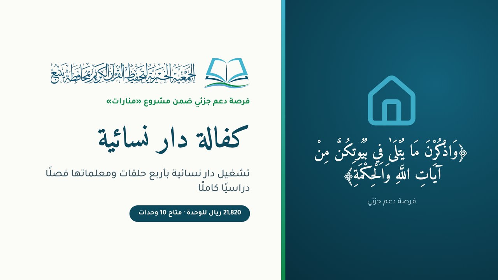

متاح 10 وحدات
كفالة دار نسائية
تشغيل دار نسائية كاملة لفصل دراسي
- مبلغ الوحدة
- 21,820 ريال
- المستفيدون
- 100 طالبة ودارسة، و4 معلمات
- المدة
- فصل دراسي (4.5 أشهر)
- المشروع
- «منارات» · الحلقات والدور النسائية